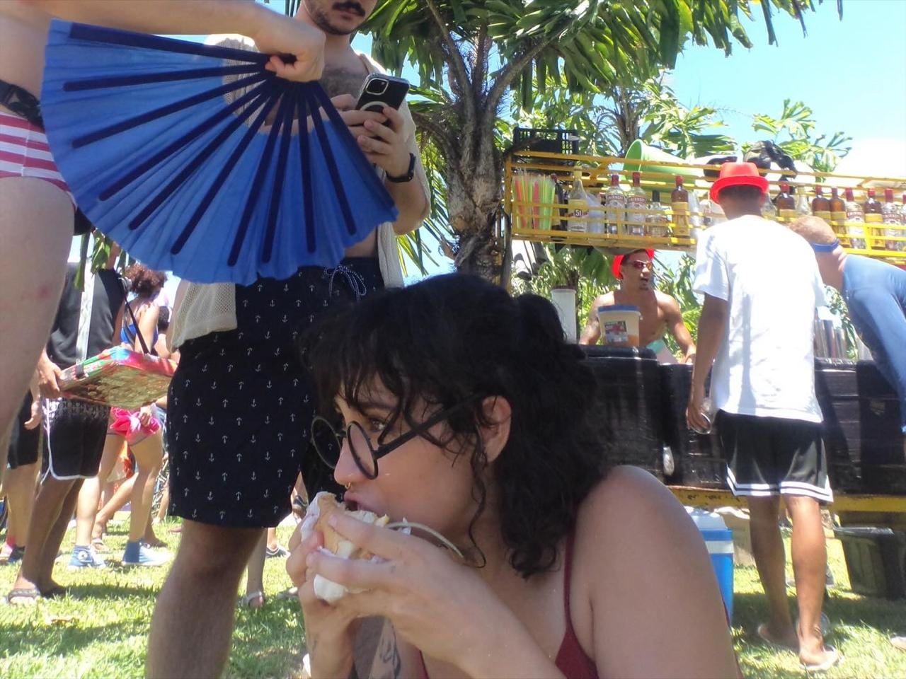

📚 My Book is out!
“Um Universo em Você”
A book I wrote to show that science is for everyone — especially curious minds ✨
Buy on Amazon🚀 Hey you, I'm Natasha.

But feel free to call me Tasha!
As you can see, I wear multiple hats. I'm passionate about the universe, people, and data. I've always wanted my journey to blend the precision of data science with the creativity of storytelling.
🎓 Education
I'm an astrophysicist (B.Sc. from the Federal University of Rio de Janeiro) and hold a M.Sc. in Systems Engineering (PESC/COPPE, UFRJ). I am currently starting my PhD, working at the intersection of optimization, data science, and real-world applications. Here, you'll find some of my projects.
💼 Professional Journey
Professionally, I've been working as a data scientist since 2018. I began at the Brazilian Institute of Economics as a Business Analytics professional and full-stack developer. Later, I ventured into People Analytics at Sinch, and later I worked with Analytics Engineering at Stone Co, contributing as a business analytics professional, providing analyses that assist stakeholders in making strategic decisions about their products. Currently I'm working with Systems Engineering at the Electrical Energy Research Center. My main programming languages are R, SQL and Python. You can find more details on my LinkedIn profile!
🧪 Scientific Passion
My scientific inclination fuels my keen interest in creating well-documented projects, where I can discover new things and solve problems. I've dedicated several years of my life to topics such as machine learning, AI, and data visualization. In 2023, I published my first children's book, "A Universe Within You" (Um Universo em Você) aiming to demystify the idea of genius and what it means to be a scientist, emphasizing the common ground between scientists and children.
I promise I'll not make a joke about being a rocket scientist. Feel free to reach out!✨